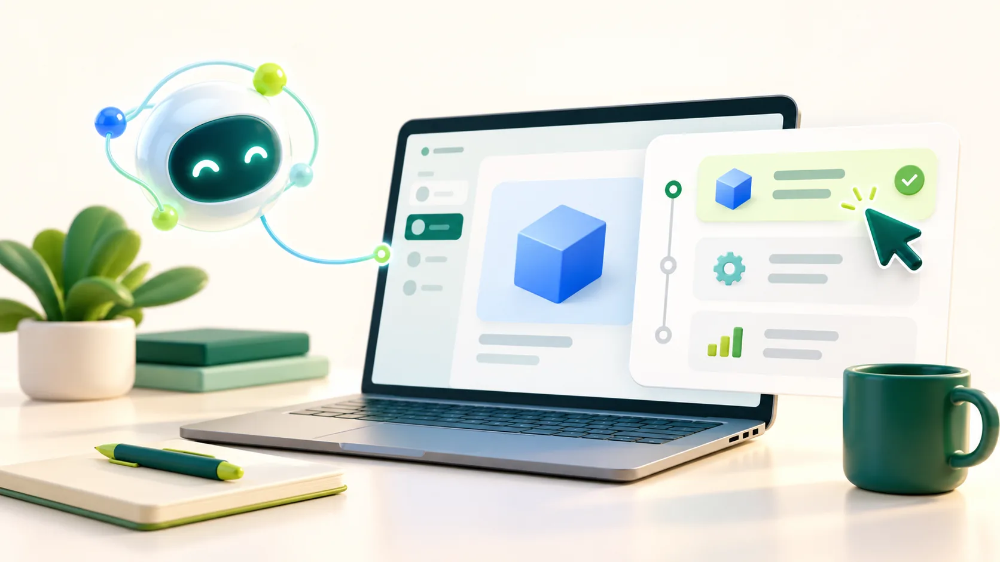
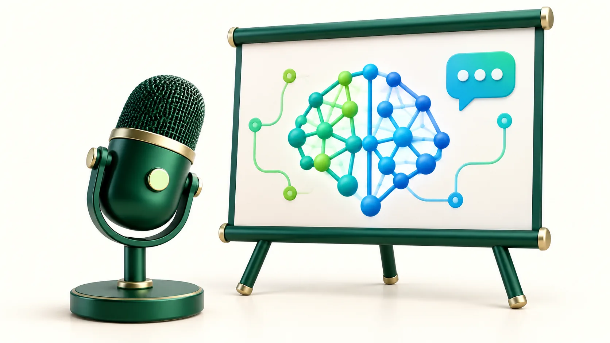
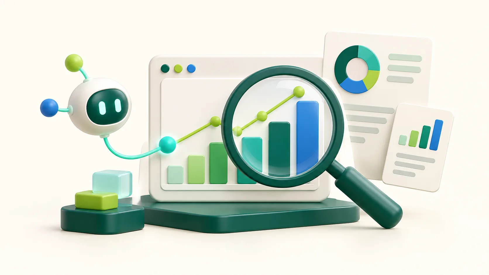
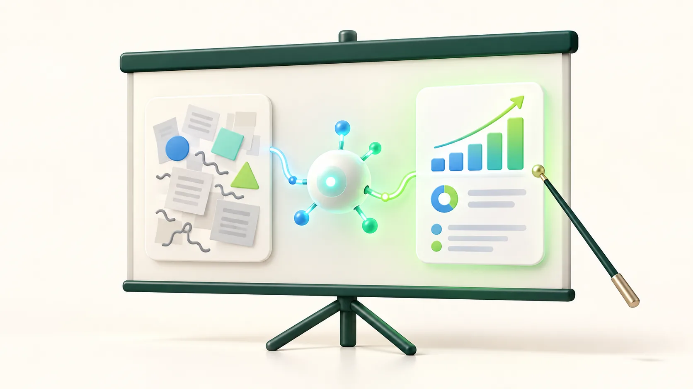
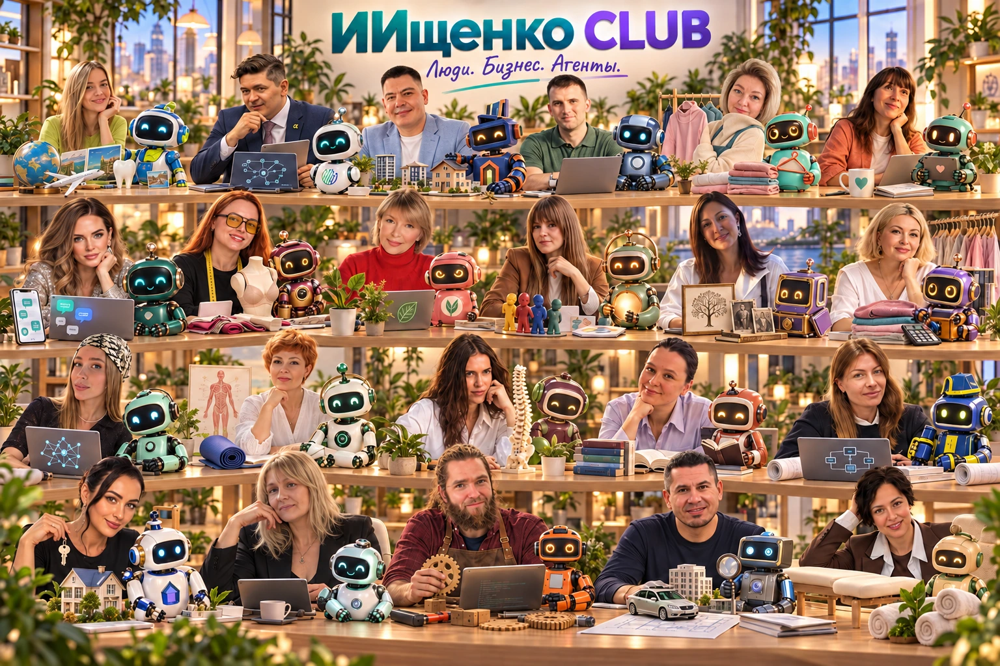
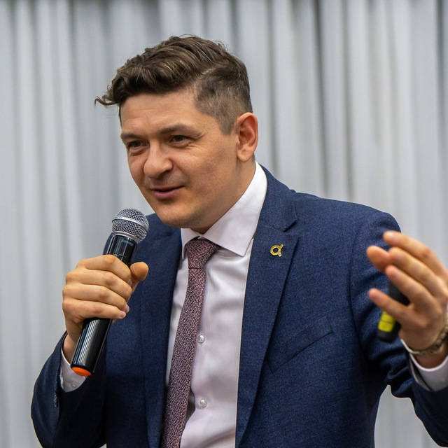

Разобраться в задаче
Уточняем цель, контекст и аудиторию. Определяем, какие вопросы важно исследовать и какой результат нужен.
БЛАГОВЕЩЕНСК · ИИЩЕНКО LAB
Из Благовещенска — к практическому применению ИИ. Соединяем предпринимательский опыт, обучение и сообщество, чтобы технологии работали на задачи людей и организаций.
01 / О НАС
ИИщенко LAB — коллектив и сообщество практиков из Благовещенска. Мы помогаем предпринимателям и организациям переходить от интереса к ИИ к его применению в работе.
Основа нашего подхода — опыт собственных проектов, обучение предпринимателей и работа с ИИ-агентами. Разбираем задачу, подбираем сценарий, создаём материалы и проверяем результат вместе с человеком.
Публичная афиша лекции Евгения · 2026 ↗НАШ ПОДХОД / ОТ ЗАДАЧИ К РЕЗУЛЬТАТУ
Содержание работы меняется под задачу. Этот подход объединяет исследование, обучение и практическую работу с ИИ.
Уточняем цель, контекст и аудиторию. Определяем, какие вопросы важно исследовать и какой результат нужен.
Выбираем подходящий формат: исследование, обучение, ИИ-помощника или практическую работу над проектом.
Готовим материалы и проверяем результат вместе с человеком. Следующие действия определяются по итогам работы.
02 / НАПРАВЛЕНИЯ РАБОТЫ
От задач предпринимателя и команды — до образовательных программ и практических демонстраций для широкой аудитории.
Помогаем исследовать задачу, готовить материалы и планы, осваивать ИИ-агентов с учётом контекста бизнеса и решений руководителя.
Выступления и практические занятия для предпринимателей, команд и молодёжи: от первого знакомства до работы с реальной задачей.
ИИщенко CLUB объединяет предпринимателей: встречи, разборы, навыки и поддержка помогают продолжать практику после первого знакомства.
ФОРМАТЫ РАБОТЫ
Подбираем формат под задачи организации, уровень аудитории и ожидаемый результат. Их можно сочетать в одной программе.
Изучаем задачи бизнеса, проектируем рабочие сценарии и помогаем внедрять ИИ-агентов в процессы компании с учётом контекста и правил работы.
Практическая работа с инструментами и задачами участников: постановка запросов, проверка результатов и применение в профессиональной деятельности.
Разрабатываем ИИ-треки и практические задания, помогаем командам применять ИИ и представлять результаты работы над задачами.

04 / ДЛЯ МЕРОПРИЯТИЙУчастники пробуют инструмент на конкретной задаче и разбирают результат вместе с ведущим.

05 / ДЛЯ ШИРОКОЙ АУДИТОРИИПонятно объясняем возможности ИИ, показываем примеры и обсуждаем, как технологии меняют работу, обучение и профессию.
Серия встреч и практических заданий: от знакомства с ИИ до последовательной работы над задачами участников.

07 / ДЛЯ РУКОВОДИТЕЛЕЙИсследуем рынок и бизнес-идеи, разбираем активы и готовим материалы, которые помогают собственнику оценить варианты дальнейших действий.

08 / ДЛЯ АУДИТОРИЙ И КОМАНДПоказываем процесс работы с ИИ на примере: от постановки вопроса до результата и его проверки.
Встречи, обмен опытом, разборы и поддержка сообщества помогают продолжать освоение инструментов в работе.
Программу, содержание и условия определяем под задачи каждого проекта.
АНАЛИТИКА ДЛЯ СОБСТВЕННИКОВ И РУКОВОДИТЕЛЕЙ
От проверки новой идеи до подготовки действующего бизнеса или актива к продаже. Исследования и инструменты собраны на отдельном сайте ИИщенко LAB.
Изучаем спрос, конкурентов, ограничения и экономику входа. Разделяем подтверждённые факты и вопросы, которые ещё предстоит проверить.
Исследуем рынок, конкурентов, цены и путь покупателя; готовим выводы и направления дальнейшей работы.
Разбираем объект и открытые вопросы, готовим финансовую модель и материалы для потенциального покупателя в зависимости от задачи.
На сайте доступны инструменты для проверки готовности объекта, вопросов покупателя и расчёта стоимости простоя, а также пример исследования.
Состав и глубину исследования определяем по конкретной задаче.
03 / ПРАКТИКА И ОПЫТ
Опыт предпринимательства и обучения помогает говорить о технологиях через реальные задачи, понятные аудитории.
Коллектив ИИщенко LAB применяет ИИ в работе и делится практикой с предпринимателями. На собственном проекте «Доктор Света» команда проверяет инструменты для контента и автоматизации рабочих процессов.
предпринимателей и компаний из Благовещенска и других регионов России. Проведены семь потоков практического обучения ИИ.
Детский медиацентр при школе «Отличник»: занятия журналистикой, интервью, проверкой информации и созданием медиаматериалов.
Данные о практике и обучении — по сведениям ИИщенко LAB.
04 / ПУБЛИЧНАЯ ПРОГРАММА
Две лекции Евгения были заявлены в программе ScienceOn в Благовещенске. Афиши показывают темы и формат программы.
Как использовать ИИ для объяснения и подготовки своей работы, сохраняя критическое мышление и проверяя ответы.
Открыть афишу · 2026 ↗Как меняются профессиональные задачи и какие навыки помогают человеку работать вместе с новыми инструментами.
Открыть афишу · 2026 ↗05 / ИИЩЕНКО CLUB
Клуб объединяет предпринимателей, которые осваивают ИИ для своих задач и делятся опытом применения.
Сайт клуба ↗Обсуждение ситуаций и задач участников.
Новые приёмы работы и опыт сообщества.
Пошаговый запуск подготовленного ИИ-агента и помощь при затруднениях.
ЛЮДИ · БИЗНЕС · ИИ-ПОМОЩНИКИ
Предприниматели, их дела и ИИ-помощники — в одном сообществе.

Иллюстрация сообщества · Нажмите, чтобы открыть целиком ↗
06 / ОБЩЕСТВЕННАЯ ЦЕННОСТЬ
Технологии становятся полезнее, когда люди понимают, где они помогают и где необходима проверка.
Понятный разговор о возможностях и ограничениях ИИ без необходимости быть программистом.
Знакомство с инструментами на задачах, близких участникам и их профессиональной среде.
Среда, в которой можно обсуждать вопросы, делиться находками и продолжать учиться вместе.

07 / КОЛЛЕКТИВ ИИЩЕНКО LAB
ИИщенко LAB — коллектив практиков, объединённых общей задачей: делать технологии полезными для людей и организаций.
Команда соединяет опыт предпринимательства, аналитики и обучения с практическим применением ИИ. Основатель LAB — предприниматель из Благовещенска Евгений Ищенко.
Публичная афиша лекции Евгения · 2026 ↗08 / СОТРУДНИЧЕСТВО
Видим точки совместной работы с институтами развития, государственными и образовательными организациями, бизнесом и организаторами событий.
Практическая сессия для разработчиков и предпринимателей: исследовать задачу, проработать варианты и подготовить материалы для представления проекта.
Разбор сценариев для команды на согласованных примерах: работа с материалами, поиск вариантов решений и проверка результата человеком.
Лекция, демонстрация или занятие для молодёжи, педагогов и наставников: ИИ как помощник в обучении и проектной работе.
Интерактивная демонстрация для посетителей: от вопроса и постановки задачи до результата, который можно обсудить и проверить.
Для рабочих сценариев отдельно согласуем правила обращения с данными и роль профильных специалистов. Для детской аудитории заранее согласуем возраст, содержание и условия участия.
Это возможные форматы для обсуждения. Программа, аудитория, условия и ответственность сторон согласовываются отдельно.
Связаться для обсуждения ↗ПУТЬ ОСНОВАТЕЛЯ
Опыт Евгения Ищенко — часть общей практики коллектива: от развития бизнеса и городских сообществ до обучения и применения ИИ.
Создавал и развивал проекты в торговле с Китаем, строительстве и услугах. Опыт работы с поставщиками, командами и клиентами стал основой практического взгляда на задачи бизнеса.
История и источники ↗Организовал и возглавил Амурскую областную общественную молодёжную организацию. Вместе с участниками развивал инициативы для молодёжи, здорового образа жизни и городских сообществ.
История и источники ↗Развивал амурское сообщество уличного спорта: участники восстанавливали и открывали площадки, проводили соревнования и фестивали. В 2013 году Workout Fest DV объединил более 300 спортсменов.
История и источники ↗Вошёл в IV состав Общественной палаты как представитель «Здорового поколения». Участвовал в работе региональной площадки взаимодействия общественных организаций и власти.
История и источники ↗Руководил общественным молодёжным клубом в Благовещенске — пространством для спортивных и творческих объединений, встреч, лекций и совместных мероприятий.
История и источники ↗С 2018 года развивал школу для предпринимателей и цифровые проекты, в том числе «Доктор Света». С 2023 года применяет ИИ в действующих проектах и вместе с коллективом помогает осваивать технологии другим.
История и источники ↗Публикации региональных и федеральных источников, найденные в открытом доступе. Даты и статус проверки указаны в карточках.
Открыть архив на отдельной странице ↗09 / СВЯЗЬ
Расскажите, для кого вы хотите организовать встречу или какой вопрос собираетесь решить. Вместе определим подходящий следующий шаг.
Основатель ИИщенко LAB
+7 914 538-90-45 ↗Телефон / MAXКанал Евгения в Telegram ↗